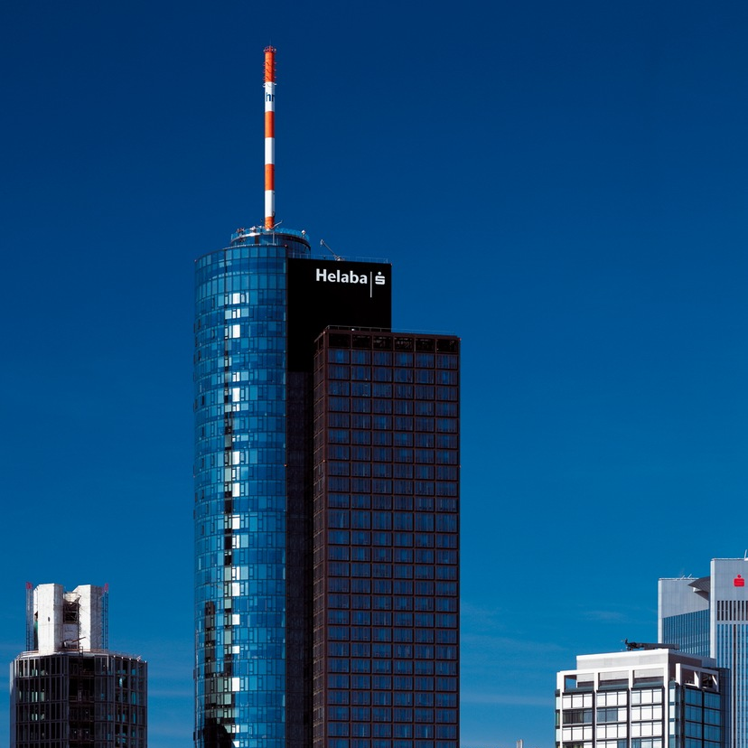
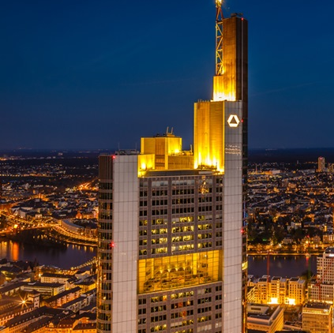
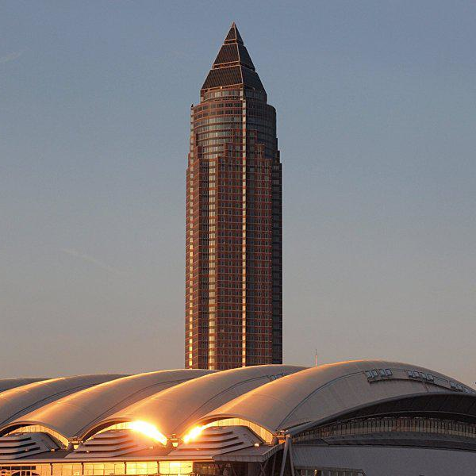
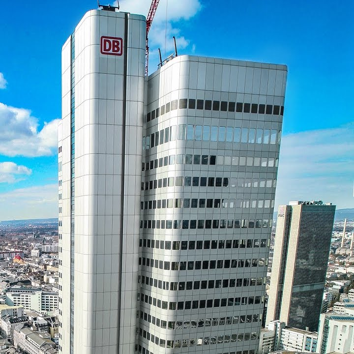
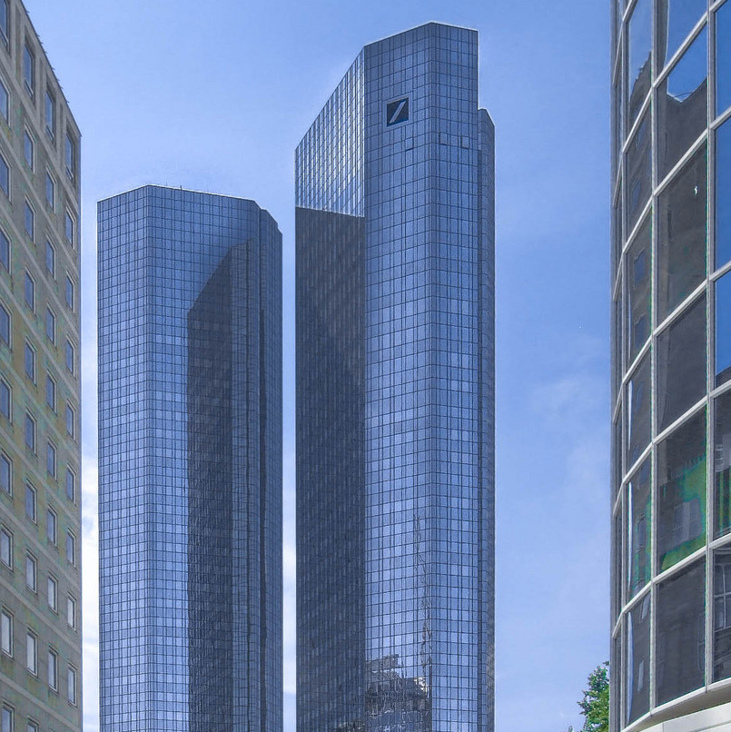
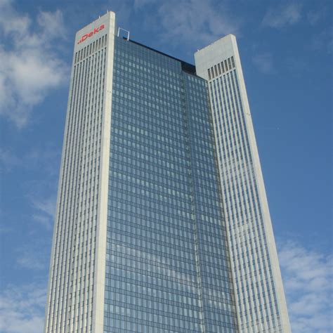

Gebäude der Skyline
|  |  |  |  |
| Maintower | Commerzbank Tower | Messeturm | Silver Tower |
| 205 Meter | 259 Meter | 256,5 Meter | 166 Meter |
| Fertigstellung 1999 | Fertigstellung 1997 | Fertigstellung 1991 | Fertigstellung 1978 |
|  |  | ||
| Deutsche Bank Gebäude | Trianon | ||
| 155 Meter | 186 Meter | ||
| Fertigstellung 1984 | Fertigstellung 1993 |
Zukunft der Skyline
Die frankfurter Skyline wächst im Moment rasant, alleine für 2022 ist die Fertigstellung von 15 weiteren Hochhäusern geplant, darunter das ONE und The Spin.
Auch geplante Gebäude gibt es reichlich, bis 2030 sind alleine 6 Hochhäuser über 100 Meter, zwei davon sogar über 200 Meter angekündigt.
Das dabei aufseheneregenste Projekt ist mit Sicherheit der im Europaviertel geplante Millenium Tower.
Ursprünglich war der Gigant mit einer Höhe von 369 Metern geplant, wurde jedoch nach seiner Baugenehmigung 2001 nie umgesetzt.
Die neue Version des Architekts Ferdinant Heide soll nun mit immerhin noch 288 Metern Höhe den Commerzbanktower als höchstes Bewohnbares Gebäude Deutschlands ablösen.
Auch freuen können sich die Frankfurter über die im Millenium Tower enthaltene Aussichtsplatform auf etwa 270 Metern, 70 Meter höher als die momentan höchste Platform auf dem Maintower.
Der Millenium Tower wird vorraussichtlich aus zwei Teilen bestehen, dem Haupttower und seiner Funktion sowohl als Hotelanlage, als auch als Bürokomplex, und einem kleineren Nebenturm, der von Privatpersonen bewohnt werden kann.